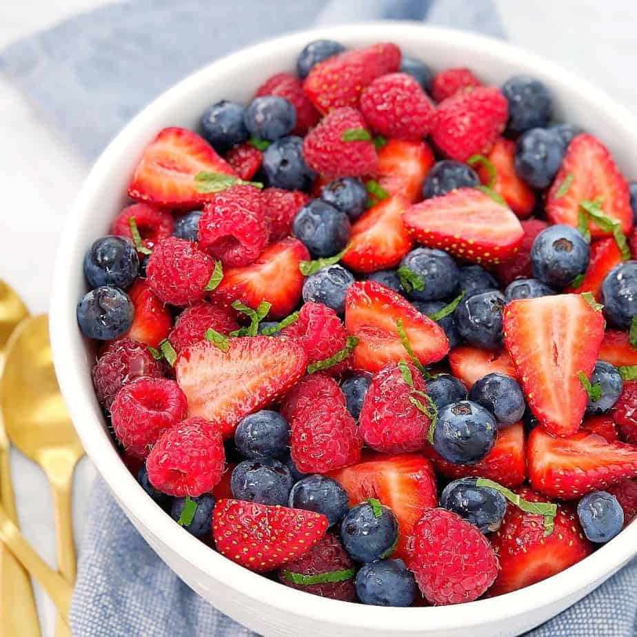
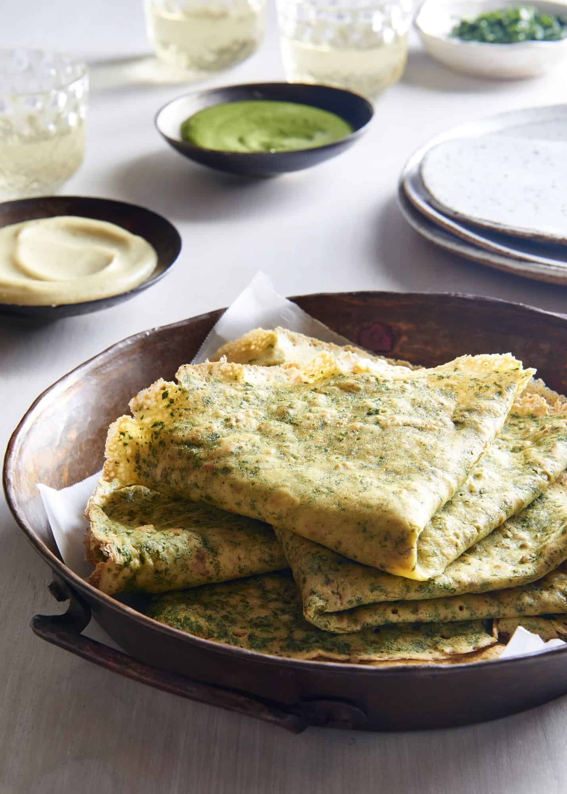

Summer Strawberry Salad
Cost-effective and packed with nutrients this beautiful strawberry salad is the perfect summer breakfast. This recipe was developed for The 5+ A Day Charitable Trust sent me a basket full of them and I created this super easy fresh sweet and tangy Strawberry Salad.
Ingredients
- Strawberries 4 cups
- Maple syrup 2tbsp
- Orange Juice 1tbsp
- Black pepper 1/4 tsp
- Almonds 1/3 cup
- Salt pinch
- More Seasonal fruits, blueberries, raspberries, pomegranates.
Method
- In a large bowl add strawberries, mix maple syrup, orange , with black pepper and salt
- Then drizzle it over the strawberries
- Top it up with Almonds and enjoy
Turmeric Crepes
\Here we have this delicious Golden crepes breakfast, which requires only a handful of ingredients and in a few minutes of your time you make healthy, delicious feast for yourself.
These crepes are made with turmeric spice blend to give them that classic yellow colour but at the same time the flavours added into this blend will add a unique touch of goodness to your breakfast.
Ingredients
- 1.5 Cup Flour
- 2 Tablespoon Turmeric Latte Blend
- 2 Tablespoon Butter Melted / Olive oil or Coconut oil
- 1 ½ Cup Soy milk or any plant based milk
- 1 Teaspoon Baking powder
Method
- In a large mixing bowl, add all the ingredients together. Wisk until combined well and keep aside.
- Heat non-stick pan over medium-low heat, brush some oil on the surface of the pan when pan its hot. Pour about 1/3 cup of batter on the pan gently spread it as evenly and wide as possible. The trick is to hold a pan from the handle and rotate the batter all over the pan into a thin layer.
- Create a thin layer of the batter and spread some oil on the sides of the pan if it gets sticky. Cook for few seconds until the batter appears to show some bubbles on top and it changes its colour.
- Flip crepe over, cook for a few more seconds then remove from heat and repeat the same until you use the entire batter.
- Serve crepes with berry compote, passion fruit syrup, coconut cream and fresh seasonal fruits of your choice.
Notes
- You can use any non-stick pan to make these crepes no crepe pan needed.
- Make sure you make crepes on low medium heat, and if you see crepes bit sticky on side you can drizzle some oil on the side of the pan and then flip.
- I add jaggery as my sugar alternative but it is entirely up to you what you wish to add as your sugar substitute.